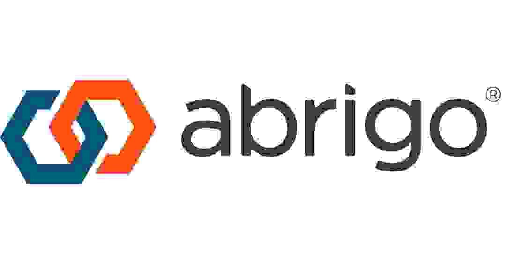
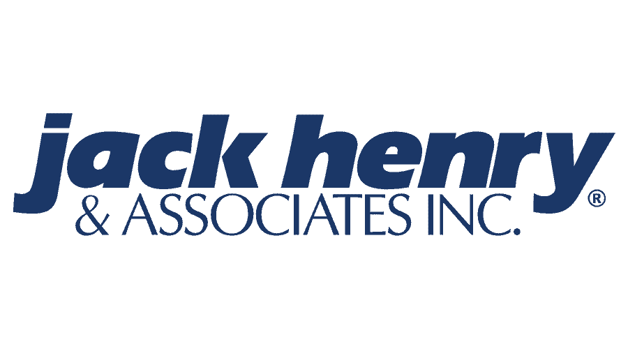
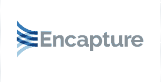
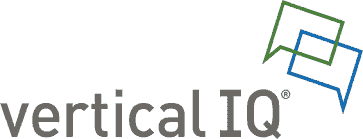

Guiding financial institutions through every phase of lending technology transformation — with deep specialization in Abrigo, core banking integration, and AI-enabled lending operations.
How We Work With You
Phase 1
Make the right decision from the start. We help financial institutions evaluate lending platforms — including Abrigo — structure requirements, and avoid the selection mistakes that create post-implementation pain.
Phase 2
The vendor implements the software. We make sure your institution is ready to receive it. Executive governance, change management, workflow decisions, and integration strategy — all the way through go-live.
Phase 3
Go-live is the beginning, not the finish line. We close the gap between what the platform can do and what your team is actually getting out of it — including AI-enabled lending workflows and full ROI realization.
"Most institutions engage us at one phase and keep us through all three. That continuity is what makes the difference between a go-live and a transformation."
Our Services
Workflow redesign, decision model optimization, document automation, underwriting workflow analysis, and eSign modernization. We help you unlock capabilities already inside your platform.
Jack Henry, Symitar, SilverLake, and API strategy. We design the middleware orchestration and automation architecture that connects your Abrigo environment to your core.
AI-assisted underwriting workflows, document intelligence, exception management, and intelligent decisioning. We help banks operationalize AI — not just talk about it.
Vendor due diligence, roadmap creation, modernization strategy, and architecture governance. Strategic counsel for lending leadership navigating complex transformation decisions.
Our Difference
Most consultants are either strategic or technical. Advanedge bridges both — and that distinction matters when your institution is navigating a complex technology transformation.
With deep operator-level experience across lending platforms, core banking integrations, workflow design, and AI-enabled lending operations, we bring the expertise financial institutions need at every phase of their journey.
Our flagship specialization is the Abrigo ecosystem — including LOS implementation, Jack Henry integration, and post-go-live optimization. When an Abrigo client needs an advisor who speaks the language of the platform and the boardroom, they call Advanedge.
Meet the Founder
Founder & Principal Advisor, Advanedge Consulting
Marvin Tellez is a fintech strategy leader and digital transformation executive who has spent his career at the intersection of banking technology and operational execution. He founded Advanedge Consulting to give community banks and credit unions access to the kind of advisor he wished existed — one who speaks the language of the boardroom and the language of the implementation team.
His expertise is built from the inside out. With deep operator-level experience across the Abrigo ecosystem — including LOS implementation, Jack Henry integration, workflow design, and AI-enabled lending operations — Marvin brings a level of platform knowledge that most consultants simply don't have. He understands the difference between a technically successful go-live and a transformation that actually changes how a bank operates.
Marvin has served as a trusted technology advisor and executive leader for community banks and credit unions across the country, earning recognition from CEOs, CIOs, and technology officers for his ability to bridge strategic vision with practical delivery. He holds graduate-level education from Harvard Extension School and has authored published work on AI in banking, intelligent document processing, and embedded finance.
Based in the Dallas-Fort Worth area, Marvin works with community banks and credit unions at every phase of their Abrigo journey — providing advisory support to financial institutions nationwide.
Book a Call with MarvinThe Ecosystem We Work In
Advanedge works within the Abrigo ecosystem alongside these platforms to deliver complete lending transformation.




Success Stories
"His astute integration of technology has revolutionized our banking operations, enhancing efficiency and customer experience. Marvin possesses an exceptional blend of technological expertise and strategic acumen."
John Brichetto
CEO, President & Chief Banking Officer
"He played a key role in advancing our organization into the digital era. Marvin is adept at navigating technological challenges and driving significant transformations. An invaluable asset to any organization."
Michael Bryan
Retired CIO
"His outstanding professionalism and strong communication skills allowed him to manage one of our large, complex projects. Marvin has exceptional project management skills and a deep understanding of banking systems and processes."
Tom Heruska
CEO, BankPoint
Insights
May 27, 2026